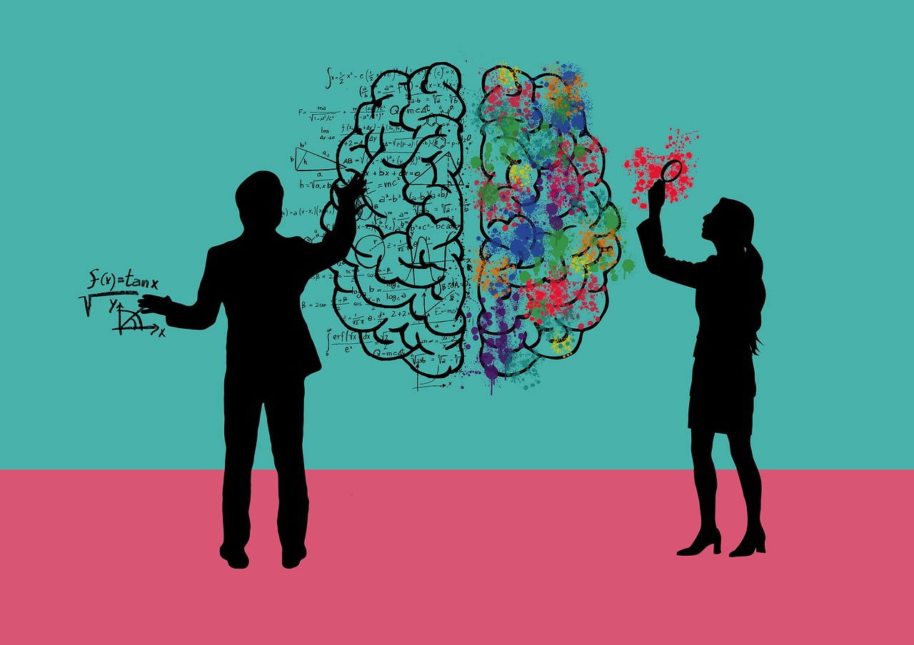
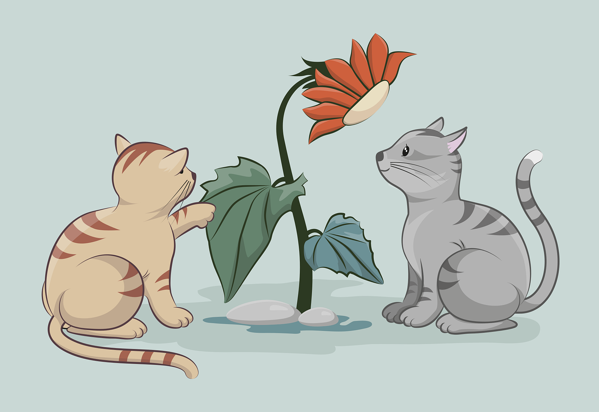
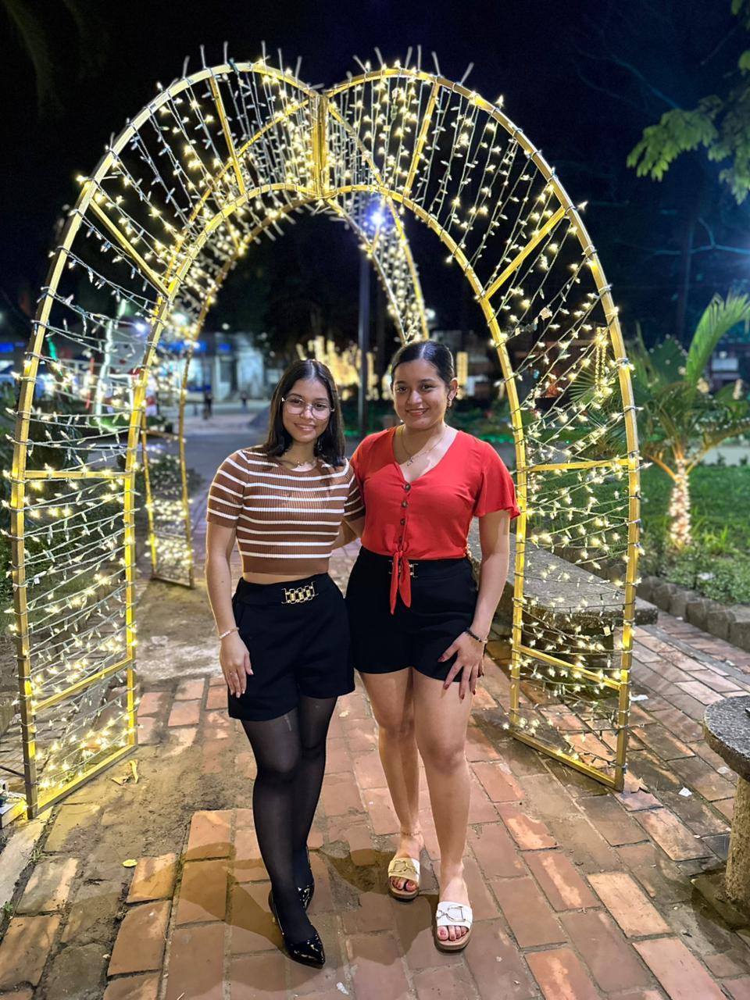
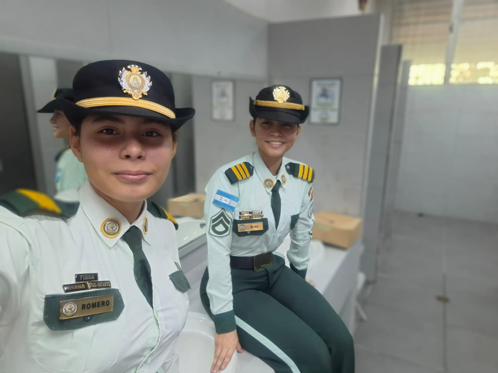

👧 Sobre Mí
“"No importa lo lento que avances, lo importante es no detenerte."
.jpg)
Soy Jenn, tengo 18 años y me considero una persona tranquila, algo tímida, pero con un mundo creativo enorme dentro de mí. Aunque a veces me cuesta encontrar inspiración o memorizar rápido, siempre estoy dispuesta a aprender cosas nuevas. Me gusta observar, imaginar y transformar lo simple en algo bonito. 🌸✨
💪 Habilidades
Aquí algunas cosas que sé hacer:
- 👥 Trabajo en equipo
- ✨ Decoración de espacios y presentaciones
- 🖋️ Escritura ordenada y estétic
- 🎨 Diseño visual básico (colores, formas, armonía)
- 🧠 Creatividad
💖 Fortalezas
- 🌟 Soy una persona positiva
- 🌱 Ganas de mejorar siempre
- 🧠 Paciencia conmigo misma
- 🌸 Sensible
- 💪 Fuerte ante las adversidades
👩👧 Mi Hermana
 Mi hermana es mucho más que eso: es mi ejemplo, mi compañera de vida y una de mis fortalezas más grandes. Siempre está ahí para apoyarme, escucharme, animarme cuando me siento insegura y ayudarme a creer en mí misma, incluso en los días más difíciles. 💖 Gracias a ella he aprendido a valorarme y a levantarme cada vez que caigo. Su cariño, paciencia y consejos me inspiran a ser mejor cada día. Es como mi segundo hogar: donde siempre encuentro calma, confianza y amor. 🌟
👨👩👧👦 Mi Familia

Somos cuatro en casa: mi mamá, mi papá, mi hermana y yo. Todos trabajamos juntos en un negocio familiar que nos une mucho. Mi mamá es una mujer increíblemente trabajadora y siempre está pendiente de nosotras con mucho cariño. Mi papá es tranquilo y reservado, pero muy solidario, siempre apoyando a mi mamá en todo. Mi hermana es mi mejor amiga, mi confidente y una gran inspiración. Ella ha sido mi apoyo constante, mi segunda madre, y gracias a ella he aprendido a creer más en mí misma. En nuestra familia siempre nos ayudamos y nos cuidamos, y eso me hace sentir muy afortunada y llena de amor.
🎬 Mis Películas Favoritas de Marvel
Me apasiona el universo cinematográfico de Marvel, especialmente las épicas historias de los Avengers. Las tramas emocionantes, los personajes icónicos y los mensajes inspiradores me han acompañado durante años. Aquí te comparto algunas de las películas que más me han marcado:
Avengers Endgame
Pantera Negra
La era de Ultron
Capitán América: Civil War
Iron Man
Mi actor favorito es Robert Downey Jr.Su papel como Tony Stark es inolvidable, pero también me gusta en otras películas. Tiene un carisma único.🌟🌟
🎓 Estudios Académicos
Actualmente estoy cursando el tercer año de Bachillerato en Informática. Al principio, no estaba muy segura de esta elección, pero con el tiempo he descubierto que me apasionan muchos aspectos de esta área. Gracias a mis profesores, que me han enseñado con paciencia y dedicación, he aprendido a valorar la importancia de la tecnología en nuestra vida diaria. La informática no solo es programar, sino también entender redes, diseño web y muchas otras cosas interesantes. Sé que no es fácil, pero cada día me esfuerzo por aprender más y superarme. Estoy emocionada por todo lo que aún puedo descubrir y lograr en este campo.
🐾 Mi Mejor Amiga
 He tenido la fortuna de conocer personas maravillosas gracias a la informática, pero sin duda una de las más importantes en mi vida es mi mejor amiga. Ella ha estado conmigo en cada paso, apoyándome incondicionalmente tanto en los momentos felices como en los más difíciles. Su amistad es un refugio donde puedo ser yo misma, sin miedo a ser juzgada. Su apoyo constante, sus palabras de aliento y su buen humor hacen que hasta los días más complicados se vuelvan más llevaderos. En clase, siempre encontramos la manera de reírnos y disfrutar, y eso me ayuda a desconectar y olvidar las preocupaciones. Gracias a ella, he aprendido el valor de la verdadera amistad y lo importante que es tener a alguien que te entienda y te acompañe en el camino. Más que una amiga, es un pilar fundamental en mi vida y una gran fuente de inspiración.